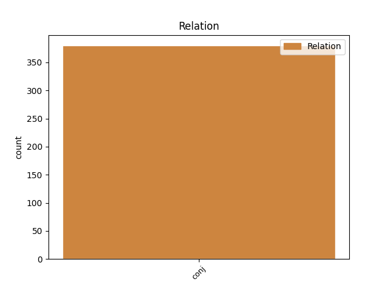
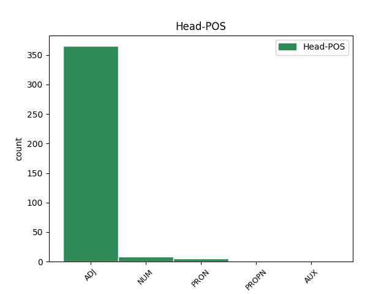
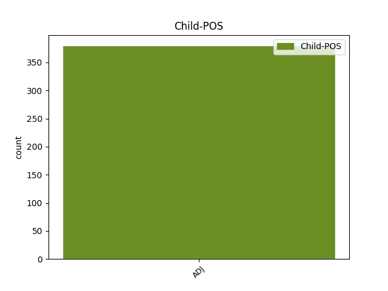

Distribution of features within this leaf



Agreement Rules sorted by frequency.
- When the dependent token is the conjunct(conj) of the head token, and the head token is ADJ and the dependent token is ADJ.
1 Finnjet _ _ _ _ 0 _ _ _
2 valmistui _ _ _ _ 0 _ _ _
3 Helsingissä _ _ _ _ 0 _ _ _
4 vuonna _ _ _ _ 0 _ _ _
5 1977 _ _ _ _ 0 _ _ _
6 ollen _ _ _ _ 0 _ _ _
7 aikanaan _ _ _ _ 0 _ _ _
8 maailman _ _ _ _ 0 _ _ _
9 nopein nopea ADJ A Case=Nom|Degree=Sup|Number=Sing 0 _ _ _
10 ja _ _ _ _ 0 _ _ _
11 suurin suuri ADJ A Case=Nom|Degree=Sup|Number=Sing 9 conj _ _
12 autolautta _ _ _ _ 0 _ _ _
13 . _ _ _ _ 0 _ _ _
1 Joskus _ _ _ _ 0 _ _ _
2 voi _ _ _ _ 0 _ _ _
3 kaksi kaksi NUM Num Case=Nom|Number=Sing|NumType=Card 0 _ _ _
4 tai _ _ _ _ 0 _ _ _
5 useampi usea ADJ A Case=Nom|Degree=Cmp|Number=Sing 3 conj _ _
6 naaras _ _ _ _ 0 _ _ _
7 munia _ _ _ _ 0 _ _ _
8 samaan _ _ _ _ 0 _ _ _
9 pesään _ _ _ _ 0 _ _ _
10 . _ _ _ _ 0 _ _ _
1 Haluan _ _ _ _ 0 _ _ _
2 korostaa _ _ _ _ 0 _ _ _
3 , _ _ _ _ 0 _ _ _
4 että _ _ _ _ 0 _ _ _
5 toimikunnat _ _ _ _ 0 _ _ _
6 ovat _ _ _ _ 0 _ _ _
7 hyvät _ _ _ _ 0 _ _ _
8 ihmiset _ _ _ _ 0 _ _ _
9 juuri _ _ _ _ 0 _ _ _
10 Teitä sinä PRON Pron Case=Par|Number=Plur|Person=2|PronType=Prs 0 _ _ _
11 varten _ _ _ _ 0 _ _ _
12 ja _ _ _ _ 0 _ _ _
13 kaikille _ _ _ _ 0 _ _ _
14 avoimia avoin ADJ A Case=Par|Degree=Pos|Number=Plur 10 conj _ SpaceAfter=No
15 ! _ _ _ _ 0 _ _ _
Disagree Examples:
1 Selitin _ _ _ _ 0 _ _ _
2 ja _ _ _ _ 0 _ _ _
3 kuvailin _ _ _ _ 0 _ _ _
4 ympäristöäni _ _ _ _ 0 _ _ _
5 , _ _ _ _ 0 _ _ _
6 ja _ _ _ _ 0 _ _ _
7 hän _ _ _ _ 0 _ _ _
8 kertoi _ _ _ _ 0 _ _ _
9 minun _ _ _ _ 0 _ _ _
10 olevan olla AUX V Case=Gen|Degree=Pos|Number=Sing|PartForm=Pres|VerbForm=Part|Voice=Act 0 _ _ _
11 viimeisellä _ _ _ _ 0 _ _ _
12 asemalla _ _ _ _ 0 _ _ _
13 joka _ _ _ _ 0 _ _ _
14 vielä _ _ _ _ 0 _ _ _
15 on _ _ _ _ 0 _ _ _
16 Suomessa _ _ _ _ 0 _ _ _
17 , _ _ _ _ 0 _ _ _
18 mutta _ _ _ _ 0 _ _ _
19 ensimmäisellä ensimmäinen ADJ Num Case=Ade|Derivation=Inen|Number=Sing|NumType=Ord 10 conj _ _
20 joka _ _ _ _ 0 _ _ _
21 luulee _ _ _ _ 0 _ _ _
22 olevansa _ _ _ _ 0 _ _ _
23 venäjällä _ _ _ _ 0 _ _ _
24 . _ _ _ _ 0 _ _ _
1 Eihän _ _ _ _ 0 _ _ _
2 meillä minä PRON Pron Case=Ade|Number=Plur|Person=1|PronType=Prs 0 _ _ _
3 olisi _ _ _ _ 0 _ _ _
4 silloin _ _ _ _ 0 _ _ _
5 ollut _ _ _ _ 0 _ _ _
6 edes _ _ _ _ 0 _ _ _
7 tilaa _ _ _ _ 0 _ _ _
8 millekään _ _ _ _ 0 _ _ _
9 junanradalle _ _ _ _ 0 _ _ _
10 , _ _ _ _ 0 _ _ _
11 hyvä hyvä ADJ A Case=Nom|Degree=Pos|Number=Sing 2 conj _ _
12 kun _ _ _ _ 0 _ _ _
13 itse _ _ _ _ 0 _ _ _
14 mahduttiin _ _ _ _ 0 _ _ _
15 kaikki _ _ _ _ 0 _ _ _
16 yhtaikaa _ _ _ _ 0 _ _ _
17 lattialle _ _ _ _ 0 _ _ _
18 seisomaan _ _ _ _ 0 _ _ _
19 . _ _ _ _ 0 _ _ _
1 Palvelualttius _ _ _ _ 0 _ _ _
2 on _ _ _ _ 0 _ _ _
3 tyydyttävä tyydyttävä ADJ A Case=Nom|Degree=Pos|Number=Sing 0 _ _ _
4 , _ _ _ _ 0 _ _ _
5 mutta _ _ _ _ 0 _ _ _
6 huoneen _ _ _ _ 0 _ _ _
7 saanti _ _ _ _ 0 _ _ _
8 vaikeata vaikea ADJ A Case=Par|Degree=Pos|Number=Sing 3 conj _ SpaceAfter=No
9 . _ _ _ _ 0 _ _ _
1 Tehtävä _ _ _ _ 0 _ _ _
2 on _ _ _ _ 0 _ _ _
3 vaikea _ _ _ _ 0 _ _ _
4 , _ _ _ _ 0 _ _ _
5 sillä _ _ _ _ 0 _ _ _
6 ammatti _ _ _ _ 0 _ _ _
7 on _ _ _ _ 0 _ _ _
8 ensimmäinen ensimmäinen ADJ Num Case=Nom|Derivation=Inen|Number=Sing|NumType=Ord 0 _ _ _
9 ja _ _ _ _ 0 _ _ _
10 tärkein tärkeä ADJ A Case=Ins|Degree=Pos|Number=Plur 8 conj _ _
11 asia _ _ _ _ 0 _ _ _
12 , _ _ _ _ 0 _ _ _
13 jonka _ _ _ _ 0 _ _ _
14 avulla _ _ _ _ 0 _ _ _
15 luokittelemme _ _ _ _ 0 _ _ _
16 ihmisen _ _ _ _ 0 _ _ _
17 . _ _ _ _ 0 _ _ _
1 Euroalueen _ _ _ _ 0 _ _ _
2 ostopäällikköindeksi _ _ _ _ 0 _ _ _
3 laski _ _ _ _ 0 _ _ _
4 heinäkuussa _ _ _ _ 0 _ _ _
5 50,4:ään 50,4 NUM Num Case=Ill|Number=Sing|NumType=Card 0 _ _ _
6 eli _ _ _ _ 0 _ _ _
7 alimmilleen alin ADJ A Case=All|Degree=Pos|Number=Plur|Person[psor]=3 5 conj _ _
8 sitten _ _ _ _ 0 _ _ _
9 lokakuun _ _ _ _ 0 _ _ _
10 2009 _ _ _ _ 0 _ _ _
11 . _ _ _ _ 0 _ _ _